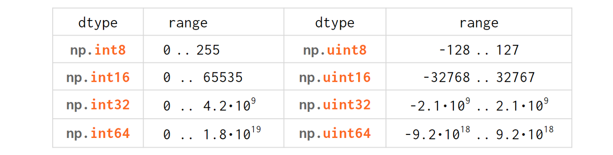

Numpy, a python library for efficient processing of n-dimentional arrays, is pretty omnivorous when it comes to data types: it can handle just everything.
It has its own set of ‘native’ types which it is capable of processing at full speed but it can also work with pretty much anything known to python.
Outline
- Integers
- Floats (including Fractions and Decimals)
- Bools
- Strings
- Datetimes
- Type Checks
1. Integers
When you feed a python int into numpy, it gets converted into a native numpy type called np.int32 (or np.int64 depending on the OS, python version and the magnitude of the initializers).
If you’re unhappy with the int type that numpy have chosen for you, you can specify one explicitly with np.zeros(10, np.uint8) or np.zeros(10, 'uint8').
Just like in C/C++, u stands for 'unsigned' and the number designates the width of the variable in bits.
Numpy works best when the width is fixed now so unlike ordinary python the value will rotate when it reaches the maximum value for the corresponding data type:
>>> np.array(10).dtype # could be int64 on a different OS dtype('int32') >>> np.array(2**31–1)+1 # 2**31-1 is INT_MAX for int32 -2147483648 >>> np.array(2**63-1)+1 # always np.int64 because v > 2**32-1 -9223372036854775808
For performance reasons numpy doesn’t warn you about the overflows happening with arrays — even with zero-dimensional array such as those in the example above. Speaking of zero-dimensional arrays more realistic example where you can run into them is when you iterate over a numpy array with nditer:
>>> v = next(np.nditer(np.arange(3, 5))); v array(3) >>> v.shape () >>> v.ndim 0 >>> v[()] # obtaining the value of the 0-dim array 3
As for numpy scalars — they are covered by the overflow warnings:
>>> np.array([2**63–1])[0] + 1 FloatingPointError: overflow encountered in longlong_scalars
The reasoning behind such a discrimination is like this:
Unlike true floating point errors (where the hardware FPU sets a flag whenever it does an atomic operation that overflows), we need to implement the integer overflow detection ourselves. We do it on the scalars, but not arrays because it would be too slow to implement for every atomic operation on arrays. Robert Kern, one of the numpy core developers
You can make it an error
>>> with np.errstate(over='raise'): >>> print(np.array([2**31-1])[0]+1) FloatingPointError: overflow encountered in long_scalars
(although the name FloatingPointError for an integer overflow looks a bit misleading.)
or suppress it entirely
>>> with np.errstate(over='ignore'): >>> print(np.array([2**31-1])[0]+1) -2147483648
But you can’t expect it to be detected when dealing with any arrays.
Numpy also exposes a bunch of aliases (eg. np.intc=int in C, np.int_=long in C, etc) as an attempt to make the code closer to the underlying C code and thus more cross-platform. And yet some more aliases generally for internal usage (like np.intp=ssize_t in C, used in cython)
Finally, if for some reason you need arbitrary-precision integers (python ints) in ndarrays, numpy is capable of doing it, too:
>>> a = np.array([10], dtype=object) >>> len(str(a**1000)) # '[1000...0]' 1003
— but without the speedup as it will store references instead of the numbers themselves, keep boxing/unboxing python objects when processing, etc.
2. Floats

As python did not diverge from IEEE 754-standardized C double type, the floattype transition from python to numpy is pretty much hassle-free:
* This is the number reported by np.finfo(np.floatnn).precision. As usual with floats, depending on what you mean by significant digits it may be 15 (FLT_DIG) or 17 (FLT_DECIMAL_DIG) for float64, etc.
** Support for np.float128 is somewhat limited: it is unix-only (not available on windows). Also the names float96/float128 are highly misleading. Under the hood it is not __float128 but whichever longdouble means in the local C++ flavor. On 86_x64 linux it is float80 (padded with zeros to for memory alignment) which is certainly wider than float64, but it comes at the cost of the processing speed. Also you risk losing precision if you inadvertently convert to python float type. For better portability it is recommended to use an alias np.longdouble instead of np.float96 / np.float128 because that’s what will be used internally anyway.
Floats exactly represent integers below a certain level (limited by the number of the significant digits):
>>> a = np.array([2**24], np.float32); a # 2^(mantissa_bits+1) array([16777216.], dtype=float32) >>> a+1 array([16777216.], dtype=float32) >>> 9279945539648888.0+1 # for float64 it is 2.**53 9279945539648888.0 >>> len('9279945539648888') # Don't trust the 16th decimal digit! 16
Also exactly representable are fractions like 0.5, 0.125, 0.875 where the denominator is a power of 2 (0.5=1/2, 0.125=1/8, 0.875 =7/8, etc). Any other denominator will result in a rounding error so that 0.1+0.2!=0.3. The standard approach of dealing with this problem is to compare them with a relative tolerance (to compare two non-zero arguments) and absolute tolerance (if one of the arguments is zero). For scalars it is handled by math.isclose(a, b, *, rel_tol=1e-09, abs_tol=0.0), for numpy arrays there’s a vector version np.isclose(a, b, rtol=1e-05, atol=1e-08). Note that the tolerances have different names and defaults.
For the financial data decimal.Decimal type is handy as it involves no additional tolerances at all:
>>> from decimal import Decimal as D >>> a = np.array([D('0.1'), D('0.2')]); a array([Decimal('0.1'), Decimal('0.2')], dtype=object) >>> a.sum() Decimal('0.3')
But it is not a silver bullet: it also has rounding errors. The only problem it solves is the exact representation of decimal numbers that humans are used to. Plus it doesn’t support anything more complicated than arithmetic operations and a square root and runs slower than floats.
For pure mathematic calculations fractions.Fraction can be used:
>>> from fractions import Fraction >>> a = np.array([1, 2]) + Fraction(); a array([Fraction(1, 1), Fraction(2, 1)], dtype=object) >>> a/=10; a array([Fraction(1, 10), Fraction(1, 5)], dtype=object) >>> a.sum() Fraction(3, 10)
It can represent any rational numbers, but pi and exp are out of luck )
Both Decimal and Fraction are not native types for numpy but it is capable of working with them with all the niceties like multi-dimensions and fancy indexing, albeight at the cost of slower processing speed than that of native ints or floats.
Complex numbers are processed no differently than floats with extra convenience functions with intuitive names like np.real(z), np.imag(z), np.abs(z), np.angle(z) that work on both scalars and arrays as a whole.
More insights on floats can be found in the following sources:
- short and nicely illustrated ‘Half precision floating point visualized¹’ (eg what’s the difference between normal and subnormal numbers)
- more lengthy but very to-the-point, a dedicated website ‘Floating point guide²’ (eg why 0.1+0.2!=0.3)
- long-read, a deep and thorough ‘What every computer scientist should know about floating-point arithmetic³’ (eg what’s the difference between catastrophic vs benign cancellation)
3. Bools
The boolean values are stored as single bytes for better performance. np.bool_ is a separate type from python’s bool because it doesn’t need reference counting and a link to the baseclass required for any pure python type. So if you think that using 8 bits to store one bit of information is excessive look at this:
>>> sys.getsizeof(True) 28
np.bool is 28 times more memory efficient than python’s bool ) It real-world scenarios the rate is lower though: when you pack numpy bools into an array, they will take 1 byte each, but if you pack python bools into a list it will reference the same two values every time, costing effectively 8 bytes per element on x64.
The underlines in bool_, int_, etc are there to avoid clashes with python’s types. It’s a bad idea to use reserved keywords for other things, but in this case it has an additional advantage of allowing (a generally discouraged, but useful in rare cases) from numpy import * without shadowing python bools, ints, etc. As of today, np.bool still works but displays a deprecation warning.
4. Strings
Initializing a numpy array with a list of python strings packs them into a fixed-width native numpy dtype called np.str_. Reserving a space necessary to fit the longest string for every element might look wasteful (especially in the fixed USC-4 encoding as opposed to ‘dynamic’ choice of the UTF width in python str)
>>> np.array(['abcde', 'x', 'y', 'z']) # 4 bytes per character array(['abcde', 'x', 'y', 'z'], dtype='<U5') # 5*4 bytes per element
The abbreviation ‘<U4’ comes from the so called array protocol and it means ‘little-endian USC-4-encoded string, 5 elements long’ (USC-4≈UTF-32, a fixed width, 4-bytes per character encoding). Every numpy type has an abbreviation as unreadable as this one, luckily they have adopted human-readable names at least for the most used dtypes.
Another option is to keep references to python strs in a numpy array of objects:
>>> np.array(['abcde', 'x', 'z'], dtype=object) # 1 byte ascii char array(['abcde', 'x', 'z'], dtype=object) # 48+len(el) per el
The first array totals 164 bytes, the second one is 128 bytes for the array itself +154 bytes for the three python strs.
If you're dealing with a raw sequence of bytes numpy has a fixed-length version of a python bytes type called np.bytes_:
>>> np.array(['abcde', 'x', 'y', 'z']) # 1 byte per ascii array([b'abcde',b'x',b'y',b'z'], dtype='|S5') # 5 bytes per element
Here |S5 means ‘endianness-unappliable sequence of bytes 5 elements long’.
As for the native np.str_ and np.bytes_ types, numpy has a handful of common string operations mirroring str methods living in the np.char module that operate over the whole array:
>>> np.char.upper(np.array([['a','b'],['c','d']])) array([['A', 'B'], ['C', 'D']], dtype='<U1')
With object-mode strings the loops must happen on the python level:
>>> np.vectorize(lambda x: x.upper(), otypes=[object])(a) array([['A', 'B'], ['C', 'D']], dtype=object)
According to my benchmarks, basic operations work somewhat faster with str than with np.str_.
5. Datetimes
An interesting data type, capable of counting time with selectable granularity — from years to attoseconds (an aspect in which other datetime libs tend to rely on the underlying OS) — represented invariably by int64.
Years granularity means ‘just count the years’ — no real improvement against storing years as an integer. Days granularity is the equivalent of python’s datetime.date. Microseconds (or nanoseconds depending on the OS) is the equivalent of python’s datetime.datetime. And everything below is unique to np.datetime64.
When creating an array you choose if you are ok with the default microseconds or you insist on nanoseconds or what not and it’ll give you 2⁶³ equidistant moments measured in the corresponding units of time to either side of 1 Jan 1970.
>>> np.array([dt.utcnow()], dtype=np.datetime64) array(['2021-12-24T18:14:00.403438'], dtype='datetime64[us]')
One downside of it is that all the times are naive: they know nothing of daylight saving and are not capable of being converted from one timezone to another. So it is not a replacement for pytz, rather a complement to it.
6. Combinations thereof
A structured dtype allows to create a custom type using the types described above as the basic building blocks. Typical example is an RGB pixel: a 4 bytes long type, in which the colors can be accessed by name:
>>> rgb = np.dtype([('x', np.uint8), ('y', np.uint8), ('z', np.uint8)]) >>> a = np.zeros(5, z); a array([(0, 0, 0), (0, 0, 0), (0, 0, 0), (0, 0, 0), (0, 0, 0)], dtype=[('x', 'u1'), ('y', 'u1'), ('z', 'u1')]) >>> a[0] (0, 0, 0) >>> a[0]['x'] 0 >>> a[0]['x'] = 10 >>> a array([(10, 0, 0), ( 0, 0, 0), ( 0, 0, 0), ( 0, 0, 0), ( 0, 0, 0)], dtype=[('x', 'u1'), ('y', 'u1'), ('z', 'u1')]) >>> a['z'] = 5 >>> a array([(10, 0, 5), ( 0, 0, 5), ( 0, 0, 5), ( 0, 0, 5), ( 0, 0, 5)], dtype=[('x', 'u1'), ('y', 'u1'), ('z', 'u1')])
To be able to access the fields as attributes, a recarray can be used:
>>> b = a.view(np.recarray) >>> b rec.array([(10, 0, 5), ( 0, 0, 5), ( 0, 0, 5), ( 0, 0, 5), ( 0, 0, 5)], dtype=[('x', 'u1'), ('y', 'u1'), ('z', 'u1')]) >>> b[0].x 10 >>> b.y=7; b rec.array([(10, 7, 5), ( 0, 7, 5), ( 0, 7, 5), ( 0, 7, 5), ( 0, 7, 5)], dtype=[('x', 'u1'), ('y', 'u1'), ('z', 'u1')])
Sure enough, recarray can be created on its own, without being a view of something else. Types for structured dtypes do not necessarily need to be homogenic and can even include subarrays.
7. Type Checks
One way to check numpy array type is to run isinstance against its element:
>>> a = np.array([1, 2, 3]) >>> v = a[0] >>> isinstance(v, np.int32) # might be np.int64 on a different OS True
All the numpy types are interconnected in an inheritance tree displayed in the top of the article (blue=abstract classes, green=numeric types, yellow=others) so instead of specifying a whole list of types like isinstance(v, [np.int32, np.int64, etc]) you can write more compact typechecks like
>>> isinstance(v, np.integer) # true for all integers True >>> isinstance(v, np.number) # true for integers and floats True >>> isinstance(v, np.floating) # true for floats except complex False >>> isinstance(v, np.complexfloating) # true for complex floats only False
The downside of this method is that it only works against a value of the array, not against the array itself. Which is not useful when the array is empty, for example. Checking the type of the array is more tricky.
For basic types the == operator does the job for a single type check:
>>> a.dtype == np.int32 True >>> a.dtype == np.int64 False
and in operator for checking against a group of types:
>>> x.dtype in (np.half, np.single, np.double, np.longdouble) False
But for more sophisticated types like np.str_ or np.datetime64 it doesn’t.
The recommended way⁴ of checking the dtype against the abstract types is
>>> np.issubdtype(a.dtype, np.integer) True >>> np.issubdtype(a.dtype, np.floating) False
It works with all native numpy types, but the necessity of this method looks somewhat non-obvious: what’s wrong with good oldisinstance? Obviously the complexity of dtypes inheritance structure (they are constructed ‘on the fly’!) didn’t allow to do it according to principle of the least astonishment.
Yet another method is to use (undocumented, but used in scipy/numpy code bases) np.typecodes dictionary. The tree it represents is way less branchy:
>>> np.typecodes {'Character': 'c', 'Integer': 'bhilqp', 'UnsignedInteger': 'BHILQP', 'Float': 'efdg', 'Complex': 'FDG', 'AllInteger': 'bBhHiIlLqQpP', 'AllFloat': 'efdgFDG', 'Datetime': 'Mm', 'All': '?bhilqpBHILQPefdgFDGSUVOMm'}
And the usage is like
>>> a.dtype.kind in np.typecodes['AllInteger'] True >>> a.dtype.kind in np.typecodes['Datetime'] False
This approach looks more hackish yet less magical than issubdtype.
References
- Ricky Reusser, Half-Precision Floating-Point, Visualized
- Floating point guide https://floating-point-gui.de/
- David Goldberg, What Every Computer Scientist Should Know About Floating-Point Arithmetic, Appendix D
- Numpy issue #17325, Add a canonical way to determine if dtype is integer, floating point or complex